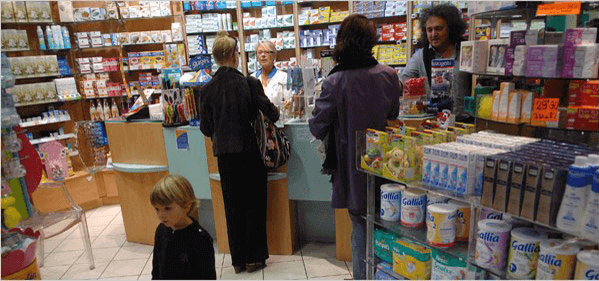
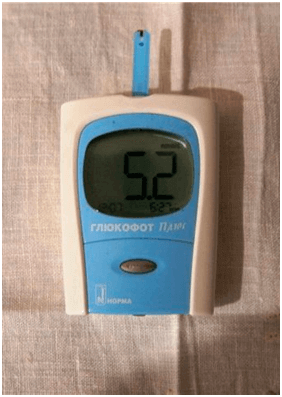

BIZNES NA CHOROBACH:
Dowiesz się o CUKRZYCIE wszystkiego, co zostało ukryte
przez wiele
lat
Kategoria: Przydatne artykuły dla diabetyków Opublikowane:

Cześć! Nazywam się Marcin Boweł.
Ja nigdy nie pisałem żadnych opinii, ale teraz postanowiłem napisać dla osób takich jak ja, dla cierpiących na cukrzycę. Dlatego że przez błędy lekarzy mogły kosztować mi życia.
Mam 35 lat, mam żonę i dwójkę dzieci. Pracuje w szkolnej stołówce. Dziesięć lat temu zdiagnozowano mi cukrzycę typu 2. Zawsze czułem się zmęczony, nie mogłem odżywiać się prawidłowo, zmuszony byłem się do jedzenia tylko chudego jedzenia . I to z moją pracą! Więcej tego ciągle musiałem mierzyć poziom cukru we krwi .

Mój dzień zaczynał się od z przekłuwania palca i mierzenia poziomu cukru. Ja wydawałem na lekarstwa tysiące euro miesięcznie . To jest z pensją szefa kuchni! Katastrofa! Również ceny na leki w Polsce wzrastają przez cały czas.

Musiałem sprzedać moją działkę i samochód, wziąć pożyczkę, by płacić za leczenie i kupować paski testowe ... Byłem gotowy umrzeć, jak myślałem o tym. Czułem się ciągle chorym , i przez kilka miesięcy mocno dodałem na wadze. Czułem się ciężarem dla swojej rodziny. Żylem z obawą, że oboje dzieci będą mieli cukrzycę typu 2.
Myślałem, że nie może być gorzej, aż pewnego dnia przez przypadek prawie straciłem życie.
Kupiłem nowe buty i byli strawnie niewygodne, doszło do modzeli. Po chwili zamieniły się w nie gojące się rany. Nie czułem bólu, ale było bardzo trudno chodzić, na stopach cały czas czuło się pieczenie , więc poszedłem do lekarza. Powiedział, że istnieje duże prawdopodobieństwo rozwoju zgorzeli, co oznacza jedno - MOŻNA STRACIĆ NOGĘ!!!

Z tego, co usłyszałem, zostałem rzucony w zimny pot. Wiedziałem, że gangrena jest dość powszechna u chorych na cukrzycę, ale nie sądziłem, że sam się tego doświadczę. Jak będę żyć i pracować bez nogi!? Od lekarza wyszedłem z ogromnym strachem za moje życie i ... listą leków za kolejne tysięcy złotych.
Wieczorem tego samego dnia zadzwoniłem przez Skype do starego kolegi ze liceum, mieszka teraz w Ameryce. Powiedziałem mu historię mojego nieszczęścia, i że nie mam wystarczająco dużo pieniędzy na leki. Z kolei powiedział mi, że w Ameryce podobna sytuacja ma miejsce na rynku farmaceutycznym. Ich lekarze zalecają również kupowanie drogich leków, które tylko co robią, to pogarsza ich zdrowie. W końcu IM WIĘCEJ CHORYCH, tym WIĘCEJ LEKÓW oni potrzebują. A ich sprzedaż przynosi szalone dochody firmom farmaceutycznym . Myślę, że Polska również nie jest wyjątkiem pod tym względem, po prostu milczy się o tym wszystkim.
Zapytałem przyjaciela, czy wie, jak leczy się cukrzyca w Ameryce, powiedział mi, że wszyscy obecnie rezygnują ze zwykłych leków i biorą naturalne dodatki. Ich skuteczność wzrosła kilkakrotnie ostatnim czasem i nie przynoszą szkody dla organizmu, w przeciwieństwie do zwykłych leków. Praktycznie wszystkie znane leki na cukrzycę są zastępowane przez specjalny środek - «» . U nas w Polsce o czymś takim nie słyszałem nawet, dlatego poprosiłem go, aby wysłał linka na ten środek.
Ja przeczytałem, że "" jest organicznym środkiem w postaci krople. Jego głównym składnikiem jest inulina pochodząca z rośliny Heliánthus tuberósus . Przez wieki stosowano ją w medycynie orientalnej, aby znormalizować poziom cukru we krwi. Po wielu badaniach współczesna nauka dowiodła skuteczności tego polisacharydu w walce z cukrzycą typu 2. A co najważniejsze, inulina w połączeniu z L-argininą pomaga przywrócić komórki trzustki wytwarzające insulinę!
”” - jest jedynym dodatkiem, który zawiera dany ekstrakt. Przy cukrzycę typu drugiego, on zmniejsza poziom cukru we krwi , zmniejsza czy wcale eliminuje (więcej 20% chorych) nie potrzebują więcej preparatów hipoglikemicznych , wzmacnia naczynia krwionośne i reguluje metabolizm.
"" rekomendowany do użycia w połączeniu z terapią lekowa , i
zarówno jako ZAPOBIEGANIE, jeśli istnieje ryzyko rozwoju choroby.
Ja postanowiłem sprobować «», ponieważ w tym czasie nie miałem nic do stracenia i
zamówiłem to bezpośrednio ze strony internetowej producenta.
Zasadniczo rano nalewałem do szklanki ciepłą wodę, rozpuszczałem łyżeczkę krople i pilem małymi łykami. Szczerze mówiąc, nie liczyłem na cudo. I na próżno… Tydzień później zauważyłem, że czuję się mniej zmęczonym, stopniowo zaczynałem jeść moje ulubione jedzenie . Poziom cukru we krwi powrócił do normy (przed przyjęciem «» poziom glukozy we krwi na pusty żołądek stanowił 9,6 , a po dwóch tygodniach użycia po posiłku– 5,4 ) , więcej tego ranki na nodze zagoili się. Nie mówię o wadze. Schudłem o 4,5 kg!
Ja nie mogłem uwierzyć, patrząc na wyniki ... To jest rozwiązanie problemu dla pacjentów z cukrzycą typu 2. Zniknął ból i mrowienie, niepokój o to, co jem . Nie mam więcej obaw o operacje i zastrzyki. NIE POTRZEBUJĘ KUPOWAĆ I BRAĆ GÓRĘ TABLETEK. Pokonałem cukrzycę bez fałszywych produktów firm farmaceutycznych i bez porad od tak zwanych «ekspertów».

Odrazu powiem, «» sprzedaje się tylko przez internet, ponieważ branża farmaceutyczna nie dopuszcza dodatku do rynku i w każdy możliwy sposób stara się zmniejszyć sprzedaże. Pamiętaj o tym firmy farmaceutyczne nie patrzą na Ciebie jak na pacjenta, którego trzeba wyleczyć ... Widzą Cię jako klienta na całe życie.
A «» OSZCZĘDZA TWOJE pieniądze, które musiałbyś wydać na leki. Bądź ostrożny, fałszywe leki czasami trafiają do Polski. Zamów u JEDNEGO oficjalnego producenta w Polsce, jakość jest gwarantowana.

Mam nadzieje, że moja historia będzie Ci przydatna i uratuje wiele z was. Bądź zdrowy!
Komentarze:
Tym lekarzam tylko co chce to odciąć coś! Znajomy lekarz polecił mi lek na PROFILAKTYKĘ cukrzycy. «» jest obecnie uważany za najlepszy środek na cukrzycę. Wiecie co, sam powiem, że przed początkim kursu poziom glukozy na pusty żołądek wynosił 8,7, za miesiąc - 5,9 PO POSIŁKU! Nadal biorę.
Dzięki, że napisałeś swoją historie. Mój mąż i ja straciliśmy już nadzieję ... Przeczytałam, zamówiłam z tej strony internetowej. Po kilku tygodniach zrobiłam badania- z 7.9 poziom insuliny stał 4.8!!!
Również chcę napisać, myślałem, że kolejne oszustwo, dopóki sam się nie przekonałem się. Brałem przez miesiąc. Przed kursem tego leku poziom insuliny na pusty żołądek wynosił 9,8, miesiąc później po posiłku - 5,9. Mieszkam i cieszę się!
Cześć, mam na imię Ania. Nie cierpię na cukrzycę. Ale mój ojciec jest chory na cukrzycę typu 2 juz 15 lat. Kto może mi powiedzieć, jak nam z tym problemem poradzić? Naprawdę kocham mojego ojca i życzę mu wiele lat zdrowego życia, po prostu nie wiem co zrobić, jeśli nagle coś się stanie ... Chcę mu jakoś doradzić, jakoś mu pomóc, będę bardzo wdzięczny na poradę
Masz sprobować brać go przed jedzeniem razem z lekami, i jeszcze ze szklanką ciepłej wody « ». To nie zamieni konwencjonalnych leków, ale poziom cukru pomoże zmniejszyć!
Mój ojciec ma podobny problem, tylko że nie wstrzykuje insuliny, bierze tylko tabletki. Więc zaczął słuchać porady matki, pilnować diety i brać ten suplement, tylko gdy przestał czuć palec na nodze…
Ekonomiczne narzędzie! Byłam winna dużo pieniędzy, drogo kosztowało leczenie syna. W pracy przyjaciel doradził, żeby sprobowaliśmy «». Nie wierzyłam, że to wszystko zmieni, ale jednak. Syn czuje się teraz dobrze. Możecie nie wierzyć, ale od 9,7 poziom insuliny spadł do 5.9!
Miałam też cukrzycę typu 2, było to obciążeniem dla rodziny. Siostra, która studiuje medycynę znalazła stronę, gdzie szczegółowo opisano działanie «» i jego pozytywny efekt. Natychmiast to zamówiliśmy dodatek, po prostu przywróciła mnie do normalnego życia!
Mój brat cierpiał na cukrzycę typu 2. Zrozpaczona byłam, ale jednak zamówiłam. To była moja ostatnia nadzieja! Glukoza po 2 godzinach po posiłku wynosiła 9,8, a tydzień później - NA PUSTY ŻOŁĄDEK - 5,3! Tutaj link na stronę, gdzie ja zamawiałam «».
Pracuję jako lekarz w prywatnym szpitalu. Zaproponowano mi sprzedaż leków dla pacjentów, powiedziano że będę dostawał prowizje, ale jak ja mogę .. moja matkę ma cukrzycę typu drugiego, ja znalazłem skuteczne lekarstwo metodą naszych prób i błędów. Wyniki są następujące: przed użyciem «» glukoza na pusty żołądek - 8,7. Po 3 miesiącach przyjęcia - 5,9. Przed - poziom glukozy we krwi po 2 godziny po posiłku - 9,8 i 3 miesiące po - po 2 godzinach po posiłku - 5.2. Sądzę, że wkrótce całkowicie odmówimy się od przyjęcia leków ..
Lekarze-gady, tylko i chcą nasze pieniądze !!!!! O ile dłużej można przepisywać tabletki drogie, gdy są tanie analogi!?
Gdzie byłeś wcześniej z Twoim artykułem ... Mam cukrzycę… :(
Nie rozpaczaj się! Mi «» pomaga. Sam sprawdzałem! Masz tylko pić ten suplement rano w połączeniu z głównymi lekami do zapobiegania choroby i staje się łatwiej żyć
Jak ten “” używać?
Nalałam do kubka gorącą wodę, rozpuściłam ją zimną trochę, by była ciepła, a następnie dodałam łyżeczkę "", rozmieszałam i piłam rano na pusty żołądek. Elementarnie :)
A ja zamiast herbaty rano go piję) Zmniejsza poziom insuliny. Miałam trzy tygodnie temu rano 7, 6, a teraz mierzę - 5,2. Tutaj i tak))
Kto brał “”, możecie powiedzieć co tam jest w składnikach?
Zamówiłem sobie, na opakowaniu w składnikach zadeklarowano: Fibregam, inulin, kwas cytrynowy, witaminy B6, B1. Myślę, że wszystko jest użyteczne, na pewno nie będzie gorzej..
To dobrze, że istnieje taka opcja u nas! Nigdy nie rozumiałam, dlaczego powinnam kupować leki po gwałtownych cenach, gdy istnieją i inne niedrogie leki. Zwłaszcza to że idę na emeryturę niedługo, nie będę mogła dużo wydawać w aptekach, więc tak, dobrze jest słuchać tych lekarzy, ale lepiej jest myśleć swoją głową
Pokazałem przyjacielu, który pracuje jako lekarz z «», przeczytał i był zaskoczony, że coś takiego sprzedaje się w Polsce! Mówi, że wszystkie składniki mają naprawdę korzystny wpływ na zdrowie i obniżają poziom insuliny we krwi. W przypadku chorujących na cukrzycę ten jeden środek da radę zastąpić przez cały zestaw leków.
О, Kamil, napisz proszę, o Twoich wynikach
Brałem przez dwa tygodnie, z 7.1 poziom cukru zmniejszył się do 4,8. Zdecydowanie trzeba kontynuować!!!
P.S. Jest dla mnie ważne co myślicie o "". Jeśli próbowałeś, podziel się swoimi wrażeniami w komentarzach poniżej: